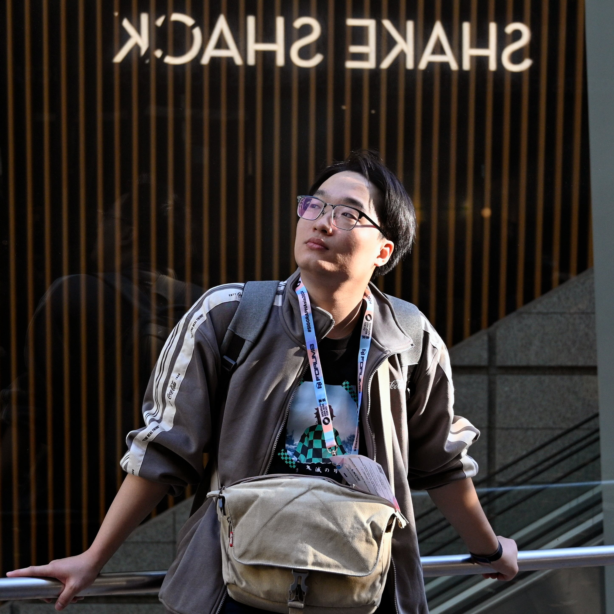
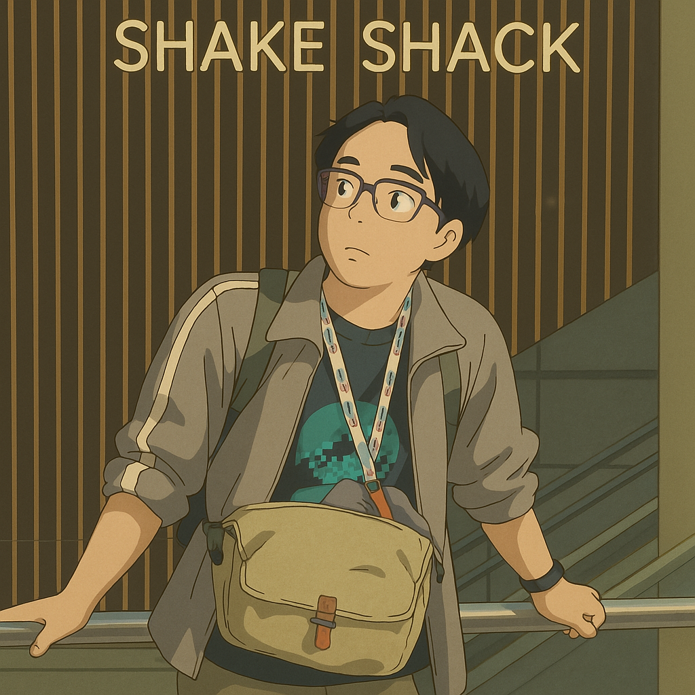

{kind=link}
正在加载三维模型...
三维模型加载失败。打开 GLB 文件
作品 1：基于单张图像生成的三维场景，记录了东京 SIGGRAPH Asia 2024 期间的一个瞬间。
杨辰 (Chen Yang)个人简介： |
  |
|
研究方向： |
|
代表工作 |
最新动态2026-08: 最新工作 SCULPT 正式发布，提出面向三维部件生成的减法式组合框架。 2026-06: 像素匠PRO 上线 50 小时用户突破 4 万。 2026-06: 小艺3D × 像素匠PRO 正式上线，亮相 HDC 2026 并获“鸿蒙创新精品应用奖”。 2026-06: Snap-Snap 发表于 TCSVT。 2026-03: TIGON 论文入选 CVPR 2026。 2026-03: UniLat3D 论文入选 Findings of CVPR 2026。 2026-01: WorldGrow Gallery 正式上线。 2025-11: WorldGrow 入选 AAAI 2026 Oral。 2025-11: 三篇论文入选 AAAI 2026。 2025-07: GaussianObject GitHub Star 突破 1,200。 2025-06: 《动手学计算机视觉》及英文版 Hands-on Computer Vision 正式出版。本书面向计算机视觉领域的从业者和研究人员，也可作为人工智能相关专业的计算机视觉课程教材。 2025-02: GaussianObject GitHub Star 突破 1,000。 2024-09: GaussianObject 发表于 TOG (SIGGRAPH Asia 2024)。 2024-06: EndoGSLAM 论文入选 MICCAI 2024。 2024-04: ForPlane 发表于 TMI。 2023-10: LerPlane 获得 MICCAI Young Scientist Award 2023。 |
近期代表性工作 |
|
SCULPT: Subtractive Composition for 3D Part Generation
Sikuang Li*, Chen Yang*, Jiemin Fang, Jiazhong Cen, Yuhe Wei, Jichen Pang, Wei Shen, Qi Tian
arXiv, 2026 论文详情 / 项目主页 / arXiv / 代码 |
|
Snap-Snap: Taking Two Images to Reconstruct 3D Human Gaussians in Milliseconds
Jia Lu*, Taoran Yi*, Jiemin Fang, Chen Yang, Chuiyun Wu, Wei Shen, Wenyu Liu, Qi Tian, Xinggang Wang
TCSVT, 2026 项目主页 / arXiv / 代码 |
|
Segment Anything in 3D with NeRFs
Jiazhong Cen*, Zanwei Zhou*, Jiemin Fang, Chen Yang,
Wei Shen, Lingxi Xie, Dongsheng Jiang, Xiaopeng Zhang, Qi Tian
NeurIPS, 2023 项目主页 / arXiv / 代码 |
|
Lerplane: Neural Representations for Fast 4D Reconstruction of Deformable Tissues
Chen Yang, Kailing Wang, Yuehao Wang, Xiaokang Yang, Wei Shen
MICCAI, 2023, Oral, Young Scientist Award 论文 / 代码 |
|
NeRFVS: Neural Radiance Fields for Free View Synthesis via Geometry Scaffolds
Chen Yang, Peihao Li, Zanwei Zhou, Shanxin Yuan, Bingbing Liu, Xiaokang Yang, Weichao Qiu, Wei Shen
CVPR, 2023 论文 / arXiv |
荣誉与奖励
|
学术服务会议审稿： CVPR; ICCV; ECCV; NeurIPS; ICLR; ICML; AAAI; MICCAI; SIGGRAPH; SIGGRAPH Asia期刊审稿： TOG; TMI; TPAMI; TVCG; TIP; TCSVT; TOMM 助教经历：
|
论文完整列表请见 Google Scholar。机器可读记录：BibTeX / JSON / Atom 订阅。 2026
Sikuang Li*, Chen Yang*, Jiemin Fang, Jiazhong Cen, Yuhe Wei, Jichen Pang, Wei Shen, Qi Tian.
Jiazhong Cen, Jiemin Fang, Sikuang Li, Guanjun Wu, Chen Yang, Taoran Yi, Zanwei Zhou, Zhikuan Bao, Lingxi Xie, Wei Shen, Qi Tian.
Guanjun Wu*, Jiemin Fang*, Chen Yang*, Sikuang Li, Taoran Yi, Jia Lu, Zanwei Zhou, Jiazhong Cen, Lingxi Xie, Xiaopeng Zhang, Wei Wei, Wenyu Liu, Xinggang Wang, Qi Tian.
Jia Lu*, Taoran Yi*, Jiemin Fang, Chen Yang, Chuiyun Wu, Wei Shen, Wenyu Liu, Qi Tian, Xinggang Wang. 2025
Sikuang Li*, Chen Yang*, Jiemin Fang, Taoran Yi, Jia Lu, Jiazhong Cen, Lingxi Xie, Wei Shen, Qi Tian.
Jichen Hu*, Chen Yang*, Zanwei Zhou, Jiemin Fang, Qi Tian, Wei Shen.
Zanwei Zhou, Taoran Yi, Jiemin Fang, Chen Yang, Lingxi Xie, Xinggang Wang, Wei Shen, Qi Tian.
Jiazhong Cen, Jiemin Fang, Chen Yang, Lingxi Xie, Xiaopeng Zhang, Wei Shen, Qi Tian.
Zanwei Zhou, Chen Yang, Piao Yang, Xiaokang Yang, Wei Shen. 2024
Yabo Chen*, Chen Yang*, Jiemin Fang, Xiaopeng Zhang, Lingxi Xie, Wei Shen, Wenrui Dai, Hongkai Xiong, Qi Tian.
Chen Yang*, Sikuang Li*, Jiemin Fang, Ruofan Liang, Lingxi Xie, Xiaopeng Zhang, Wei Shen, Qi Tian.
Chen Yang*, Kailing Wang*, Yuehao Wang, Sikuang Li, Yan Wang, Qi Dou, Xiaokang Yang, Wei Shen.
Chen Yang, Kailing Wang, Yuehao Wang, Qi Dou, Xiaokang Yang, Wei Shen.
Kailing Wang*, Chen Yang*, Keyang Zhao, Xiaokang Yang, Wei Shen.
Chen Yang*, Haoyu Zhao*, Hao Wang, Xingyue Zhao, Wei Shen.
Chen Yang*, Haoyu Zhao*, Hao Wang, Wei Shen. 2023
Jiazhong Cen*, Zanwei Zhou*, Jiemin Fang, Chen Yang, Wei Shen, Lingxi Xie, Dongsheng Jiang, Xiaopeng Zhang, Qi Tian.
Chen Yang, Kailing Wang, Yuehao Wang, Xiaokang Yang, Wei Shen.
Chen Yang, Peihao Li, Zanwei Zhou, Shanxin Yuan, Bingbing Liu, Xiaokang Yang, Weichao Qiu, Wei Shen.
Peihao Li, Shaohui Wang, Chen Yang, Bingbing Liu, Weichao Qiu, Haoqian Wang. 2022
Chen Yang, Shun-Yu Yao, Zan-Wei Zhou, Bin Ji, Guang-Tao Zhai, Wei Shen.
Zanwei Zhou, Ruizhe Zhong, Chen Yang, Yan Wang, Xiaokang Yang, Wei Shen.
Ruofan Liang, Jiahao Zhang, Haoda Li, Chen Yang, Yushi Guan, Nandita Vijaykumar. 2021
Bin Ji, Chen Yang, Shunyu Yao, Ye Pan. |
随手记录论文之外，我也喜欢用三维技术记录、重建和生成生活中的片段。 1 / 3 |
{kind=link}
{kind=link}